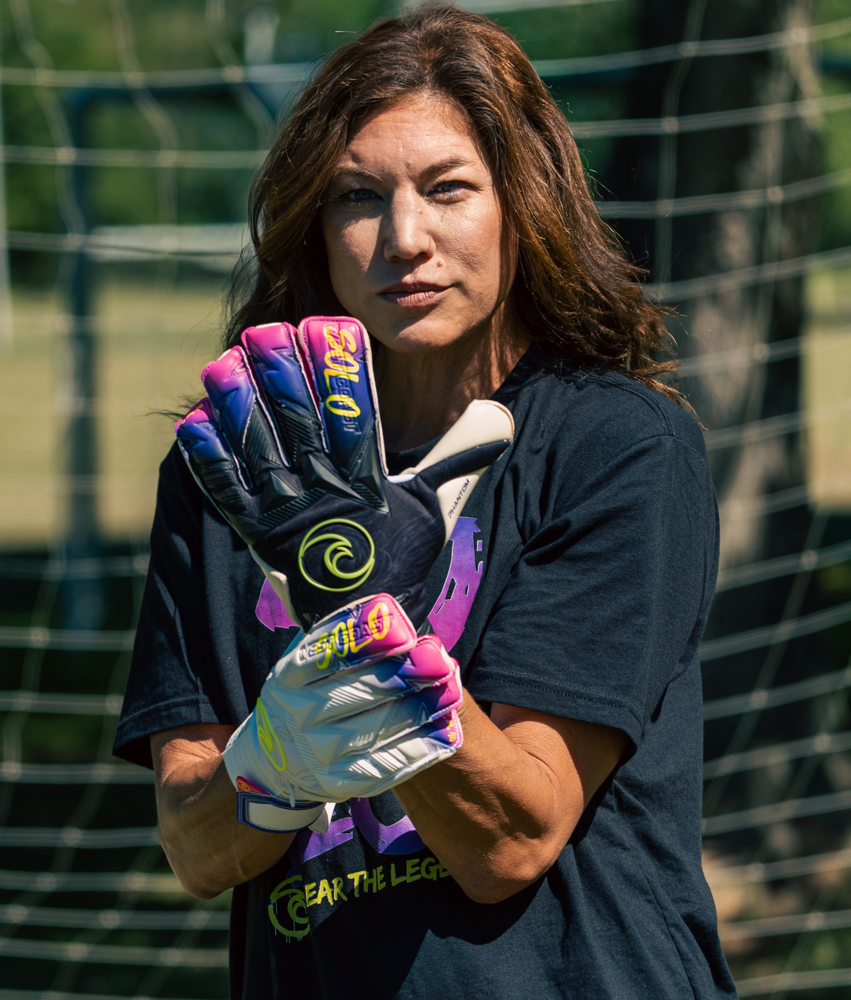

Ordinary light, looked at for long enough, starts to feel like a place.
I spent time with small everyday scenes and let the light shift until it said something. These frames are quiet on purpose: a short record of one moment most people walk past.
[Add what this series is about and what you were noticing while you made it.]

